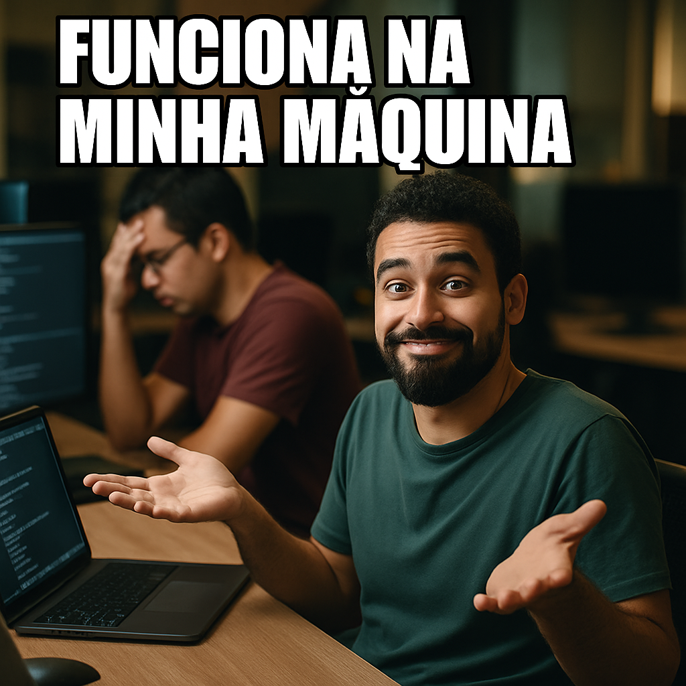

⚡
⚡JavaScript
Se HTML é a estrutura e CSS é a aparência, o JavaScript é o cérebro: o que faz a página pensar, reagir e mudar. É a linguagem que vai te levar até o React.
📦 variáveis
🔤 tipos
⚙️ funções
📋 arrays / objetos
⚡Se HTML é a estrutura e CSS é a aparência, o JavaScript é o cérebro: o que faz a página pensar, reagir e mudar. É a linguagem que vai te levar até o React.
HTML montou as paredes. CSS pintou tudo. Mas a casa ainda está "morta" — nada acontece. O JavaScript é a parte elétrica: o interruptor que acende a luz, a campainha que toca, o portão que abre quando você aperta o botão.
É o JS que faz: o botão reagir ao clique, o carrinho de compras somar, a mensagem "senha incorreta" aparecer, os dados virem do servidor e preencherem a tela.
Diferente de outras linguagens, o JS não precisa instalar nada: o próprio navegador entende. O jeito mais rápido de testar é o Console: abra qualquer site, aperte F12 (ou clique direito → Inspecionar), e vá na aba Console.
console.log(...) é o seu melhor amigo: ele imprime qualquer coisa
no console. É com ele que você "espia" o que está acontecendo no seu código. Vai usar isso a vida toda.
.js ligado no HTML com
<script src="app.js"></script> — bem parecido com o <link> do CSS.
Mas pra treinar a linguagem, o Console já resolve.
.js direto no VSCodePor muito tempo, o JavaScript só rodava dentro do navegador. Aí criaram o
Node.js: um programa que executa JavaScript direto no seu computador
(e nos servidores!). É graças a ele que dá pra rodar um arquivo .js sem abrir o navegador.
Acesse nodejs.org e baixe a versão LTS
(a "estável", recomendada). Instale como qualquer programa. Pra conferir, abra o terminal e digite
node -v — se aparecer um número de versão (ex.: v20.x), funcionou! 🎉
# confere se o Node está instalado node -v # roda um arquivo JavaScript node meu_arquivo.js
Ctrl/Cmd + Alt + N com o arquivo aberto que ele roda e
mostra o resultado ali embaixo. Sem terminal, sem complicação. 😎
Sem precisar abrir o navegador: digite JavaScript aqui e o resultado do console.log
aparece na hora. Mexe à vontade — roda no seu navegador, com segurança. 🧪
nome e a idade, crie um novo
console.log, e descomente a última linha pra ver o famoso bug do
0.1 + 0.2 com seus próprios olhos. 👀
Uma variável é uma caixinha com nome onde você guarda um valor pra usar depois. Você dá um nome (a etiqueta) e coloca algo dentro.
let nome = "Maria"; // pode mudar depois let idade = 25; const pi = 3.14; // const = NÃO muda mais idade = 26; // ok, idade era 'let' console.log(nome, idade); // Maria 26
Regra de bolso: use const por padrão. Só troque pra let
quando souber que o valor vai mudar. (Existe o var antigo — esqueça, ninguém usa mais.)
const pi = 3.14; pi = 3.15;const texto = "sou uma string"; // texto (entre aspas) const numero = 42; // número (sem aspas) const decimal = 3.99; // número também const ligado = true; // boolean: true ou false // template string: junta texto + variável com crase ` e ${ } console.log(`Tenho ${numero} anos`); // Tenho 42 anos
` e ${variavel}) é a forma
moderna de montar textos com valores no meio. Esqueça concatenar com + — isso é a maravilha.
Será que você já pegou o jeito? Joga o 🃏 Detector de Tipos: aparece um valor, você diz o tipo. Cuidado com as pegadinhas das aspas…
const media = 7.5; if (media >= 7) { console.log("Aprovado! 🎉"); } else { console.log("Ficou de recuperação 😬"); }
O if é uma bifurcação na estrada: o valor chega, a pergunta é feita,
e ele segue por um caminho só. Escolhe uma média aí embaixo e
veja a decisão acontecer: 🚦
media = 7? Deu Aprovado, porque >= é
"maior ou igual" — o 7 em ponto passa raspando. Detalhe de operador muda o destino!
=== (três iguais), não com ==.
O === compara valor e tipo, do jeito que você espera. O ==
faz "conversões mágicas" que confundem (ex.: 0 == "" dá true!).
Regra: sempre ===.
Computadores guardam decimais em binário, e alguns números "não fecham" — sobra uma
casquinha (0.30000000000000004). Isso acontece em quase toda linguagem, não só JS.
Por enquanto, só saiba que existe — a gente lida com isso quando aparecer.
+ soma · - subtrai · * multiplica · / divide ·
% resto da divisão (o "módulo")
=== igual · !== diferente · > maior ·
< menor · >= maior ou igual · <= menor ou igual
&& "E" (as duas verdadeiras) · || "OU" (pelo menos uma) ·
! "NÃO" (inverte)
= guarda · += soma e guarda (x += 1 é x = x + 1)
% (módulo): dá o resto de uma divisão.
10 % 2 é 0 (par!), 7 % 2 é 1 (ímpar!).
É o truque pra saber se um número é par ou ímpar. Guarda essa. 😉
10 % 3?Uma das coisas que mais ajuda iniciante é enxergar o código executando devagar. Aperta o ▶ e veja cada linha rodar, as caixinhas se preenchendo e o console aparecendo. Tem dois programas pra rastrear — no segundo, a condição dá falso e você vê o código pulando pro else:
De cima pra baixo, uma linha de cada vez. Quando você "ler" seu próprio código, faça igual: finja que é o computador e vá anotando o valor de cada variável. Esse é o superpoder do bom programador.
Uma função é uma receita: você dá um nome, define os ingredientes
(parâmetros) e o que ela devolve (return).
Depois é só "chamar" quantas vezes quiser, sem reescrever tudo.
// jeito clássico function saudacao(nome) { return `Olá, ${nome}!`; } // chamando a função console.log(saudacao("Maria")); // Olá, Maria!
Existe uma forma mais curta, a arrow function (função-seta). É a queridinha do React:
const saudacao = (nome) => { return `Olá, ${nome}!`; }; // versão curtíssima (return implícito): const dobro = (n) => n * 2; console.log(dobro(5)); // 10
=> é digitada com
dois caracteres: o sinal de igual = seguido do maior que >.
A sua IDE (VSCode) pode desenhar isso como uma setinha bonita ⇒, mas
você nunca digita o símbolo — sempre = e >.
Pensa na função como uma máquina de fábrica: o valor entra pelo funil
(é o argumento), a máquina trabalha com ele (o parâmetro n),
e o resultado sai pela rampa (o return). Aperta um botão e olha o número viajar: 👇
O 5 que você manda é o argumento. Dentro da máquina ele atende pelo
nome n — o parâmetro. E o que sai pela rampa é o return.
Mesma máquina, entradas diferentes, saídas diferentes — sem reescrever nada. Essa é a
graça das funções.
Array = uma lista ordenada (uma fila de coisas). Objeto = uma ficha com pares chave: valor (como o cadastro de uma pessoa).
// ARRAY: lista entre colchetes [ ] const frutas = ["maçã", "uva", "manga"]; console.log(frutas[0]); // maçã (começa no ZERO!) frutas.push("pera"); // adiciona no fim // OBJETO: pares chave: valor entre chaves { } const cliente = { nome: "João", idade: 30, ativo: true }; console.log(cliente.nome); // João
Um array é um trem de carga 🚂: cada vagão tem uma placa com o índice — e a contagem começa no 0. Clica nos botões e observa o trem:
frutas[0], o segundo
é frutas[1]... Isso confunde todo mundo no começo. frutas[1] NÃO é a
primeira fruta.
function calcularMedia(n1, n2) { const media = (n1 + n2) / 2; if (media >= 7) { return `Média ${media}: Aprovado! 🎉`; } return `Média ${media}: Recuperação 😬`; } console.log(calcularMedia(8, 6)); console.log(calcularMedia(5, 4));
saudacao (só o nome) devolve a "receita". saudacao() (com parênteses)
é que executa. Esqueceu o ()? A função não roda.
== no lugar de ===.
Comparações "mágicas" dão resultados bizarros. Use sempre os três iguais.
cliente.nme em vez de cliente.nome).
Leia a mensagem do console — ela quase sempre aponta a linha!

console.log() pelo código pra ver o valor de cada variável em cada
ponto. 90% dos bugs morrem quando você enxerga o que está dentro das caixinhas.
Crie uma função aplicarDesconto(preco, percentual) que devolve o preço final.
Ex.: aplicarDesconto(100, 10) deve dar 90. Pense: o valor do desconto é
preco * percentual / 100, e o final é preco menos isso. Teste no Console com
console.log.
function aplicarDesconto(preco, percentual) { const desconto = preco * percentual / 100; return preco - desconto; } console.log(aplicarDesconto(100, 10)); // 90 console.log(aplicarDesconto(250, 20)); // 200 // versão arrow, pra treinar a setinha => const aplicarDesconto2 = (preco, pct) => preco - (preco * pct / 100);
Crie um array de objetos chamado carrinho, com 3 produtos (cada um
com nome e preco). Depois faça uma função total(carrinho) que
soma todos os preços e devolve o valor. Dica: você vai precisar percorrer a lista somando — pesquise
sobre for ou .reduce. Traga no próximo sábado! 🛒
Você não aprende a andar de bike só lendo sobre bike. Abra o VSCode (ou o Console) e digite os treinos abaixo. Cair faz parte. 🚲
trabalhando_com_js e um arquivo boletim.js. Vamos construir
ele aos pouquinhos, cada passo aproveitando o anterior. Pra rodar: extensão
Code Runner (Ctrl/Cmd + Alt + N) ou cole no Console (F12).
O 👀 mostra a solução e o console ao lado mostra a saída esperada.
No boletim.js, crie nome e curso e imprima uma apresentação com template string.
const nome = "Maria"; const curso = "Fullstack"; console.log(`Aluna: ${nome} — curso ${curso}`);
A saída no console 👇
Abaixo do passo 1, crie mais duas variáveis: idade e cidade. Depois imprima uma segunda linha: "Tem ___ anos e mora em ___".
const idade = 25; const cidade = "João Pessoa"; console.log(`Tem ${idade} anos e mora em ${cidade}`);
Ainda no mesmo arquivo, crie um array notas com 3 notas e calcule a media. Imprima.
const notas = [8, 6, 7]; const media = (notas[0] + notas[1] + notas[2]) / 3; console.log(`Média: ${media}`);
media que você acabou de calcularUsando a variável media do passo 3, escreva um if (media >= 7) que imprime "Aprovada! 🎉", senão "Recuperação 😬". Lembra: compare com >= e use === quando for igualdade.
if (media >= 7) { console.log("Aprovada! 🎉"); } else { console.log("Recuperação 😬"); }
Repetir conta é chato. Transforme o cálculo numa função calcularMedia(notas) que você chama quantas vezes quiser. Veja as duas formas:
// versão normal function calcularMedia(notas) { return (notas[0] + notas[1] + notas[2]) / 3; } // versão arrow ( => é = seguido de > ) const calcularMedia2 = (notas) => (notas[0] + notas[1] + notas[2]) / 3; console.log(calcularMedia([8, 6, 7]));
Crie um objeto aluna com nome, curso e um array notas. Depois faça uma função boletim(aluna) que imprime o nome, o curso e a média (reusando calcularMedia do passo 5). Acesse os campos com aluna.nome, aluna.notas…
const aluna = { nome: "Maria", curso: "Fullstack", notas: [8, 6, 7] }; function boletim(aluno) { const media = calcularMedia(aluno.notas); console.log(`${aluno.nome} — ${aluno.curso}`); console.log(`Média final: ${media}`); } boletim(aluna);
Num arquivo novo fizzbuzz.js: imprima de 1 a 20, mas múltiplos de 3 viram "Fizz", de 5 viram "Buzz", e de 3 e 5 viram "FizzBuzz". Dica: use for e %. (Cai em entrevista de verdade! 😏)
if — o "FizzBuzz" tem que vir antes.for (let i = 1; i <= 20; i++) { if (i % 3 === 0 && i % 5 === 0) { console.log("FizzBuzz"); } else if (i % 3 === 0) { console.log("Fizz"); } else if (i % 5 === 0) { console.log("Buzz"); } else { console.log(i); } }
Crie um array turma com 3 alunos (cada um um objeto com nome, curso e notas). Depois rode sua função boletim() para cada aluno da turma. (Dica: dá pra pesquisar sobre for ou .forEach pra repetir.) Traga no próximo sábado! 🎒
const por padrão, let quando muda.`${ }`.if/else e sempre === (três iguais).=> = = + >).const x = [10, 20, 30]; console.log(x[1]);Esse capítulo vem na próxima sessão. Por ora, volte ao hub 👋